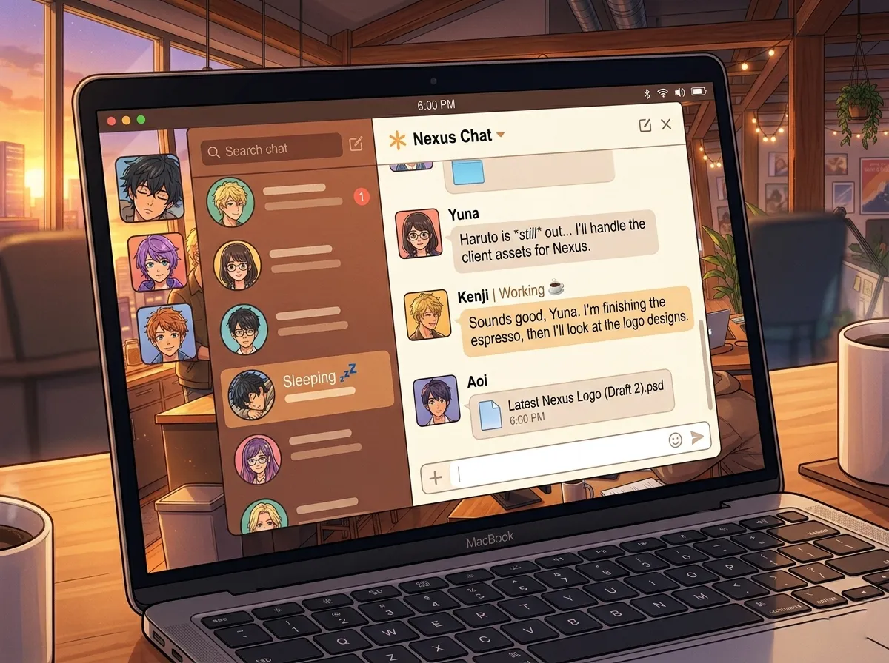
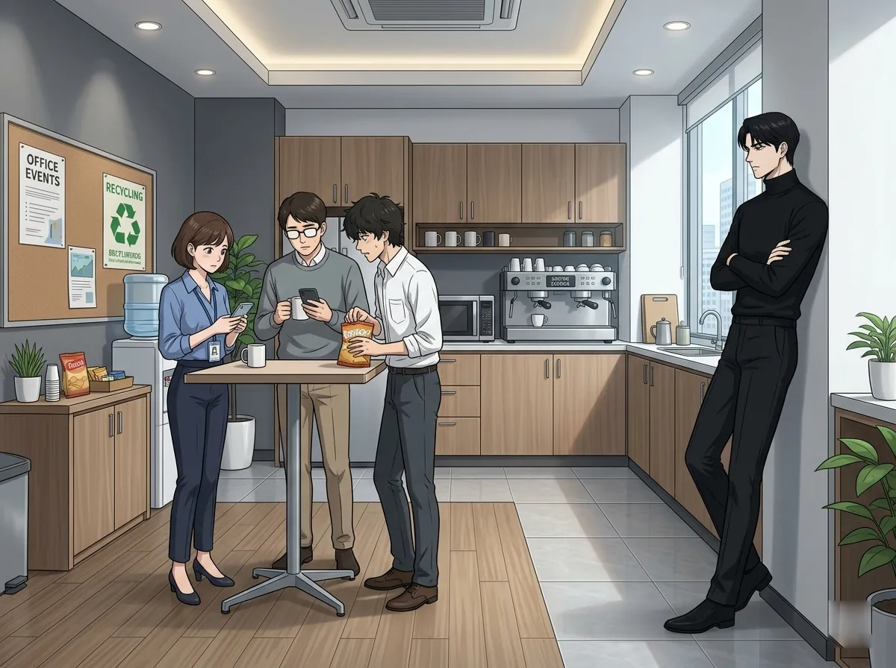
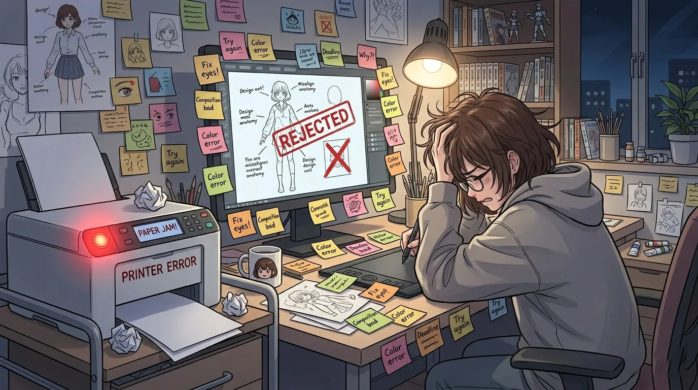
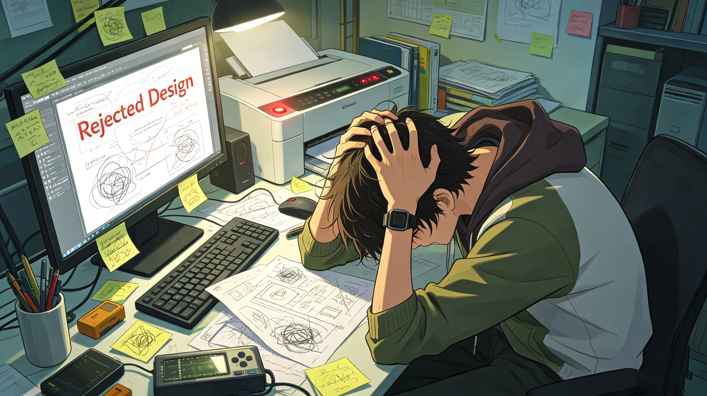
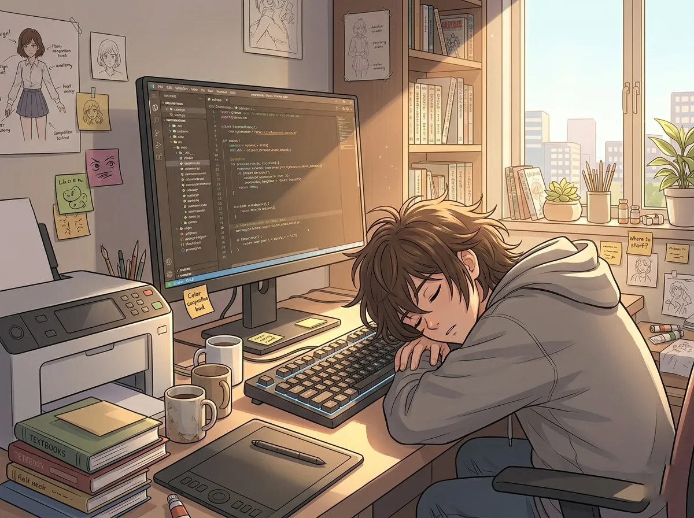
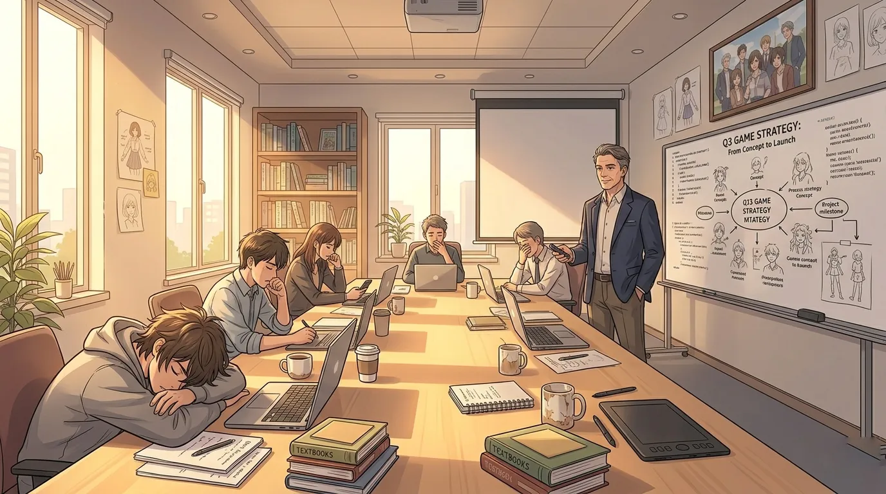
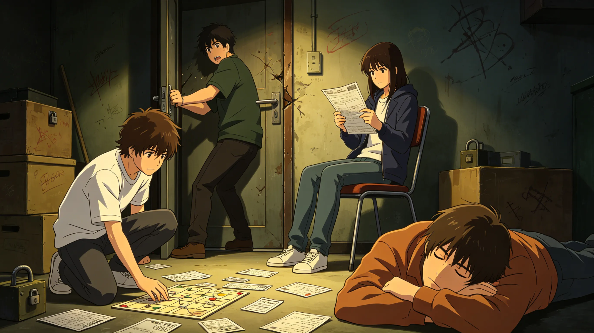
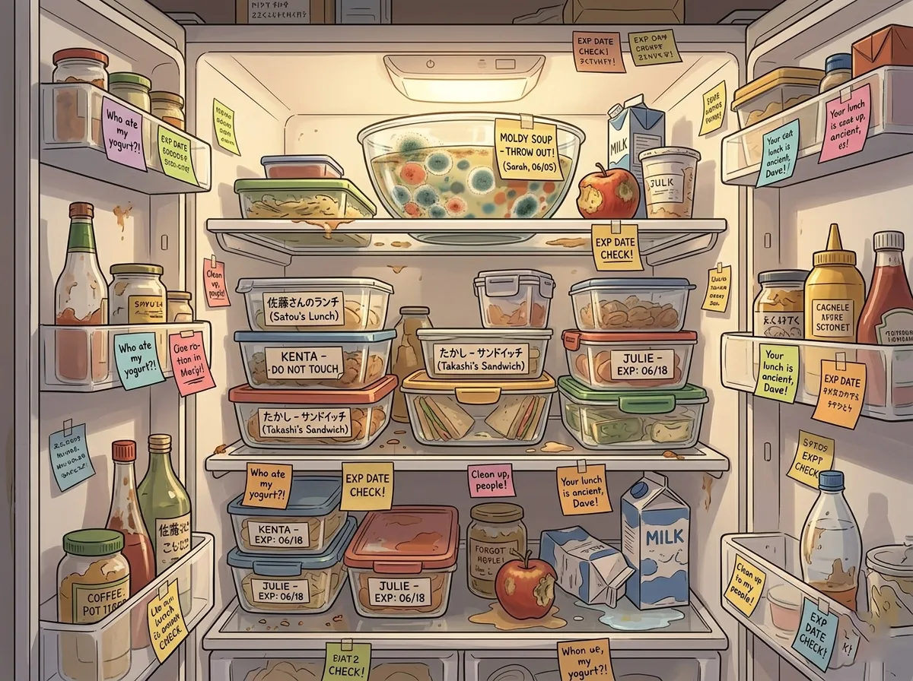
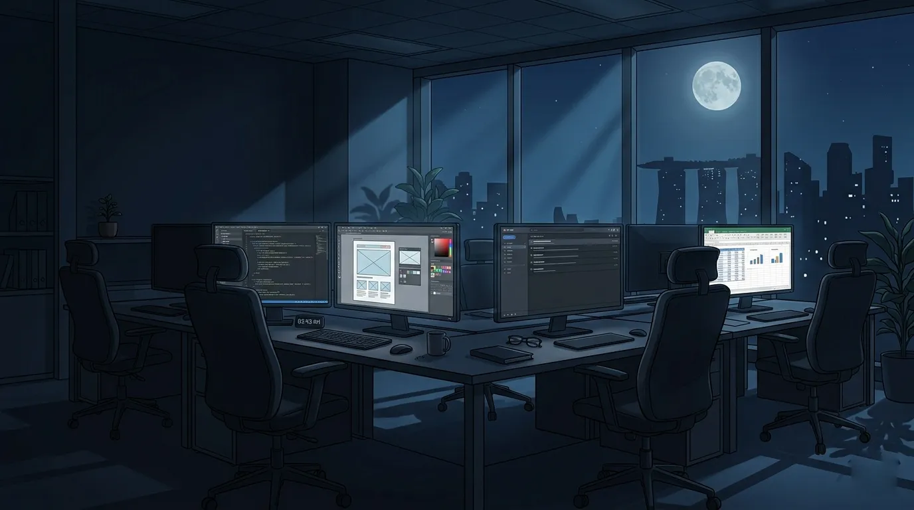
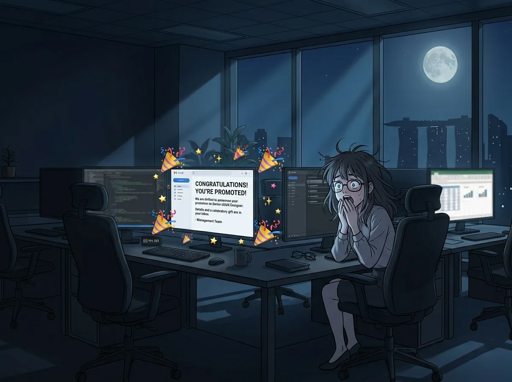

or: four colleagues, one open-plan office, zero work-life balance
it started, as most disasters do, with a hire.
sylus was already there. (no one knew why.)
zayne was in the clinic. rafayel was in design. xavier was in engineering.
they shared a floor. they shared a breakroom. they shared a fate.
this is what happened next.


sylus had an office. a corner office. with a view. with a door that closed.
he was never in it.
instead, he appeared. in the breakroom. by the coffee machine. standing. silent.
no one knew why.
"sylus," said rafayel one morning. "what are you doing."
"waiting."
"for what."
"the water to boil."
"the kettle takes forty-five seconds."
"i'm patient."
rafayel left. came back five minutes later. sylus was still there. drinking coffee that had long gone cold.
"you're still here."
"i'm observing."
"observing what."
"morale."
rafayel didn't know what that meant. (no one did.)
the rumor was that sylus owned the company. no one had confirmed it. no one wanted to ask.
he wore black. every day. different shades of black. the same silhouette.
he never smiled. (except once. at a quarterly report. no one believed it happened.)
"sylus," said zayne, walking into the breakroom. "there's a meeting in ten minutes."
"i know."
"you're not dressed for a meeting."
"i'm dressed."
"you're wearing the same thing you wear every day."
"consistency."
zayne sighed. left. sylus stayed.
the breakroom became his throne. the coffee machine his scepter. no one understood. no one asked.
one day, a new employee walked in. saw sylus. froze.
"are you... the CEO?"
sylus looked at her. "i'm someone."
she never asked again.

every monday at 9am, zayne sent the newsletter.
subject line: "Weekly Wellness - Issue #47"
body: 800 words about sleep hygiene, ergonomic posture, and the dangers of processed sugar.
no one read it.
"did you see my newsletter," asked zayne.
"yes," said rafayel. (lie.)
"what did you think about the section on screen time."
"...enlightening."
zayne knew he was lying. (zayne always knew.)
he kept sending the newsletter anyway.
issue #48: "The Importance of Hydration."
issue #49: "Stretching for Desk Workers."
issue #50: "Mental Health and Burnout Prevention."
rafayel used issue #50 to line his trash can.
xavier printed issue #51 and used it as a pillow.
sylus replied to issue #52. (no one knew sylus could reply to emails.)
"the ergonomic chair recommendation is incorrect," the email said. "i have tested them all."
zayne stared at his screen. sylus had an opinion about office chairs.
he replied: "what chair do you recommend."
sylus: "the black one."
zayne: "they're all black."
sylus: "exactly."
zayne added a new section to the newsletter: "CEO-Approved Office Equipment." (no one read that either.)
but someone started leaving a glass of water on sylus's desk. every morning.
zayne never found out who.
(it was xavier. xavier didn't know why either.)

rafayel was talented. everyone agreed.
he was also exhausting. everyone agreed.
client: "can we make the logo bigger?"
rafayel: "no."
client: "why not?"
rafayel: "because it will ruin the composition."
client: "i'm paying for this."
rafayel: "and i'm the artist."
the client complained to his manager. his manager complained to sylus. sylus stared at the manager until the manager left.
"rafayel," said sylus. "make the logo bigger."
"no."
"it's a request."
"it's a bad request."
"it's a paying request."
rafayel made the logo bigger. but he added a tiny detail. an easter egg. the client never noticed.
rafayel told no one. (xavier found it. xavier didn't tell anyone either.)
the printer was rafayel's nemesis.
it jammed. every day. rafayel blamed the printer. the printer blamed rafayel. (printers don't blame. rafayel didn't care.)
"the printer is haunted," said rafayel.
"printers aren't haunted," said zayne.
"this one is. it has a personality. a bad one."
rafayel kicked the printer. the printer worked. (no one understood.)
he fought with the marketing team. ("your fonts are boring.")
he fought with the sales team. ("your deadlines are unrealistic.")
he fought with the coffee machine. (the coffee machine won.)
but his work was good. really good.
so everyone tolerated him.
including the printer.

xavier's desk was in the corner. by the window. by the sunlight.
perfect for napping.
he wrote code. good code. efficient code. code that never broke.
he wrote it with his eyes closed.
no one knew how.
"xavier," said his manager. "are you awake?"
"yes."
"your eyes are closed."
"i'm visualizing the solution."
"you were snoring."
"strategic breathing."
his manager gave up. (xavier's code worked. that was all that mattered.)
xavier's keyboard had a key that said "Zzz." he had added it himself. no one knew what it did. (it didn't do anything. xavier thought it was funny.)
he drank coffee. then fell asleep. the caffeine had no effect.
"how do you sleep after drinking coffee," asked rafayel.
"the coffee is a ritual. not a stimulant."
"that's not how caffeine works."
"my body doesn't know that."
xavier's sleep schedule was a mystery. he stayed late. arrived early. no one knew when he left. (he slept in the office sometimes. on the couch in the breakroom. sylus found him once. didn't wake him.)
one day, the servers went down.
panic. meetings. emails.
xavier was asleep.
"wake him up," said the manager.
rafayel shook xavier's shoulder. xavier didn't move.
"he's out," said rafayel.
zayne walked over. "xavier. the servers are down."
xavier opened one eye. "give me thirty seconds."
he closed his eye.
thirty seconds later, the servers came back online.
"how did he do that," whispered rafayel.
"no one knows," said zayne.
xavier was already asleep again.

monday. 9am. conference room B.
the weekly all-hands meeting.
sylus stood at the front. didn't use slides. didn't use notes. just stood there.
"updates," he said.
silence.
"someone speak."
rafayel raised his hand. "the printer is broken."
"fix it."
"i'm not IT."
"then find IT."
"IT is xavier."
everyone looked at xavier. xavier was asleep.
sylus stared. "wake him."
zayne elbowed xavier. xavier opened his eyes. "the printer needs a firmware update."
he closed his eyes.
"that's it?" asked rafayel.
"that's it."
zayne raised his hand. "the health newsletter—"
"no one reads it," said sylus.
"people should read it."
"they don't."
zayne sat down. defeated.
the meeting continued. for forty-five minutes. no one remembered what was decided.
xavier slept through the entire thing.
at the end, sylus said: "good work. dismissed."
no one knew what good work they had done.
but they left. grateful to be free.
xavier didn't leave. (he was still asleep.)

HR scheduled a team building day.
"trust falls," said the HR manager.
"no," said sylus.
"it's mandatory."
"for whom."
"for everyone."
sylus stared. the HR manager left. (the trust falls were canceled.)
they did an escape room instead.
sylus solved the first puzzle in thirty seconds. then stood in the corner. watching.
rafayel tried to break the door. (it was locked. obviously.)
zayne read every clue. out loud. in order.
xavier sat on the floor. closed his eyes.
"xavier, we're in an escape room," said rafayel.
"i'm escaping mentally."
they failed. the room master let them out early. (out of pity.)
"that was humiliating," said rafayel.
"the puzzles were poorly designed," said zayne.
"we didn't solve a single one," said rafayel.
"i solved one," said sylus.
"that's worse. you solved one and didn't help us."
"i was observing."
"observing what."
"team dynamics."
rafayel stared. "there are no team dynamics."
"exactly," said sylus.
he walked away. (no one knew what that meant.)

the breakroom fridge was a battlefield.
zayne labeled everything. "ZAYNE - DO NOT TOUCH - MEDICAL SUPPLIES"
the medical supplies were a sandwich.
rafayel put his lunch in the fridge. it disappeared.
"who took my lunch"
silence.
"i had a label. 'RAFAYEL - ARTISANAL - HANDCRAFTED'"
"that's not a label," said zayne. "that's a personality."
xavier's snacks were everywhere. his name on nothing.
"xavier, is this your yogurt?" asked rafayel, holding up a container.
"i don't eat yogurt."
"then why is it in the fridge"
"someone put it there."
"that someone was you."
"probably."
sylus put nothing in the fridge. (he had his own fridge. in his office. no one had seen it. but they knew it existed.)
one day, a container of soup grew mold. then more mold. then sentience.
"who is responsible for this," asked zayne.
"not me," said rafayel.
"not me," said xavier.
zayne threw it away. cleaned the entire fridge. added a new rule: "CLEAN YOUR FOOD OUT BY FRIDAY."
no one followed the rule.
zayne cleaned the fridge every week. alone. resentfully.
but he kept doing it.
because someone had to.

it was 10pm. the office was dark.
except for four screens.
sylus was in his office. (he was always there. no one knew when he left.)
zayne was in the clinic. catching up on paperwork.
rafayel was at his desk. finishing a design. the client had changed the deadline. (again.)
xavier was at his desk. coding. (or sleeping. it was hard to tell.)
no one had planned to stay late. but here they were.
rafayel walked to the breakroom. poured coffee. sylus was there.
"you're still here," said rafayel.
"so are you."
"i have a deadline."
"i have a company."
zayne walked in. poured tea. "we should go home."
"home is where the work is," said rafayel.
"that's depressing."
"that's design."
xavier walked in. didn't pour anything. just stood there.
"you're awake," said rafayel.
"i'm never awake. i'm between sleeps."
they stood in the breakroom. four people. no reason to stay. no reason to leave.
"this is weird," said rafayel.
"this is work," said zayne.
"same thing," said xavier.
sylus didn't say anything. but he didn't leave.
they stood there. for ten minutes. in silence.
then they went back to their desks.
none of them would admit it. but the breakroom felt less empty with all of them in it.

an email went out.
subject: "New Senior Design Lead"
body: "Please join us in congratulating Rafayel on his promotion."
rafayel was surprised. (he hadn't applied.)
he walked to sylus's office. "did you do this"
"i approved it."
"why"
"your work is good."
"you've never said that before."
"i'm saying it now."
rafayel didn't know what to say. so he left. (he didn't say thank you. sylus didn't expect it.)
zayne sent a congratulations email. (professional. brief.)
xavier sent a single character: "👍"
rafayel stared at his screen. "that's it? just a thumbs up?"
"thumbs up is the highest praise," said xavier.
"no it isn't."
"it is from me."
rafayel didn't know what to do with that. (he saved the email.)
one evening, they left the office together.
not planned. just happened. the elevator arrived. they all got in.
sylus pressed the lobby button.
the doors closed.
silence.
"this is the longest elevator ride of my life," said rafayel.
"it's been twelve seconds," said zayne.
"work time is different."
xavier leaned against the wall. closed his eyes.
"xavier, don't sleep in the elevator."
"i'm resting my soul."
the doors opened. they walked out. into the parking lot.
sylus walked to his black car. (surprise.)
zayne walked to his sensible sedan.
rafayel walked to his car covered in bumper stickers.
xavier stood in the middle of the lot. looking around.
"where's your car," asked rafayel.
"i don't remember where i parked."
"you've worked here for two years."
"the lot changes."
"the lot doesn't change."
"my memory does."
they found his car. eventually. (it was in the same spot as always.)
they stood there. not leaving. not staying.
"see you tomorrow," said rafayel.
"unfortunately," said zayne.
sylus got in his car. didn't say goodbye. (he never did.)
xavier was already asleep in his driver's seat.
"xavier. you're in the driver's seat."
"i know."
"you can't sleep there."
"watch me."
they left. one by one.
the office stood behind them. dark. quiet. waiting for morning.
none of them said it. but they all thought it.
this isn't where i thought i'd be.
but it's not terrible.
these people are not terrible.
and maybe that's enough.